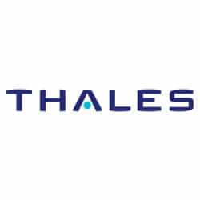
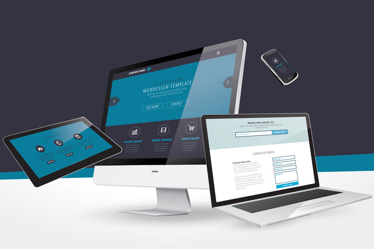
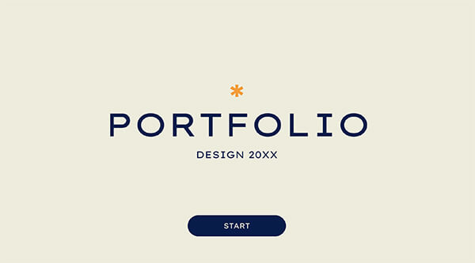

Configuration réseau sécurisé (SAE21)
Première approche d'un réseau segmenté avec VLAN, routage et règles de sécurité pour contrôler les échanges.

Développement outils web pour prise de photos (SAE 15 & 23)
Création d'une application web dynamique avec PHP et MySQL pour répondre à un besoin client précis.

Initiation WEB (R109)
Création d'un premier site web afin de maîtriser les bases du HTML, du CSS et de la structuration d'une page.
Mesurer et caractériser un signal (SAE 22)
Création, modification et affichage de signaux avec Jupyter Notebook pour comprendre leur comportement.

Création d'un portfolio (SAE 25)
Mise en place d'un site web personnel pour présenter mon parcours, mes compétences et mes projets techniques.

Initiation aux réseaux informatiques (SAE 12)
Découverte et mise en œuvre d'un premier réseau informatique avec adressage, services et tests de connectivité.
Création d'un TP de cybersécurité (R409)
Conception complète d'un TP pédagogique en cybersécurité, à partir des notions étudiées dans le cahier de cours.

Application Android de scan réseau (SAE 32)
Développement d'un outil mobile capable de scanner un réseau, d'afficher les équipements détectés et de rendre les résultats lisibles.
Étude et mesure d'antennes (R403)
Étude expérimentale d'antennes avec dispositif de mesure, observation du signal et compte rendu technique.
Recherche OSINT encadrée
Investigation à partir de sources ouvertes, réalisée dans un cadre autorisé et strictement limité par un périmètre défini.
Script d'automatisation PowerShell (R405)
Projet en cours : création d'un script PowerShell pour automatiser une tâche utile dans un contexte d'entreprise.
Réseau multi-sites sécurisé Alt-B-SUD
Conception d'une infrastructure complète : interconnexion de sites, VPN IPsec, DMZ, serveurs et sécurité réseau.